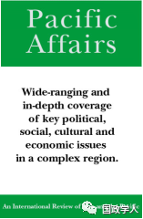

收录于合集

简 介
** 【作者】** 阿米塔·阿查亚（Amitav Acharya），美利坚大学国际事务学院教授，世界知名国际问题专家。阿查亚教授主要研究领域包括东南亚研究、多边主义和全球治理、安全研究和国际关系理论等，著有《美国世界秩序的终结》《重新思考世界政治中的权力、制度与观念》《东南亚的缔造：一个地区的国际关系》等著作。他曾受邀在CNN、BBC、CNBC等媒体上发表时评，并为《纽约时报》《金融时报》《南华早报》《亚洲时报》等国内外媒体撰写过大量专栏文章。阿查亚教授在2014-15年间曾任国际研究协会（International Studies Association）主席，是史上首位担任该职的非西方学者。
** **【 编译 】****周雨橙
** **【 校对 】****施榕
** **【 审核 】****许文婷
** **【 来源 】****Acharya, Amitav.“Remaking Southeast Asian Studies: Doubt, Desire and the Promise of Comparisons.” Pacific Affairs 87.3 (2014): 463-483.
【期刊】 太平洋事务（Pacific Affairs）是由加拿大不列颠哥伦比亚大学出版发行、同行评审、独立和跨学科的学术期刊，主要关注和发表有关亚洲及太平洋地区当代政治，经济和社会问题的学术研究。2017年该期刊的影响因子为1.119，近五年的影响因子为1.386。

重塑东南亚研究： 自我怀疑、渴望和对比较的承诺
Remaking Southeast Asian Studies：Doubt, Desire and the Promise of Comparisons
内容提要
东南亚研究面临各种挑战，学者们对此领域内在的地缘政治传承、对全球化时代地区研究是否仍有意义怀有疑虑，同时各种以学科为基础、与区域研究相竞争的研究方法相继兴起。但这些挑战也为重塑和扩展东南亚研究提供了动力，特别是通过与各种学科性研究途径及比较性研究更为密切地沟通互动。本文强调两种可能性：“跨国性区域研究”（transnational area studies）以及“学科性区域研究”（disciplinary regional studies）。这两种路径共同体现了比较研究的大好前景。运用东南亚史学中“地中海类比”（Mediterranean analogy）的论述，以及国际关系学者对东南亚区域主义的研究案例，本文主张比较研究需要走出“舒适圈”内的类比。比较研究还可以通过研究某些理念和制度的传播过程和后果来进行完善，但并非试图为这些制度和观念建立普遍的有效性，而是探索它们地方化的过程及其为多样化作出的贡献。比较研究不应该赋予任何理想型以特权地位，使其成为研究和评判“他者”的基础。本文列举了对东南亚与地中海的类比研究及对东盟与欧盟的比较研究中存在的欧洲中心主义的危险倾向，主张比较研究应该将每个案例置于其特定的时空背景中去认识其重要意义。这种比较可扩展东南亚研究，以克服对该领域经久不消的质疑。
文章导读
**1
**
前言 ****
“东南亚研究”一直以来都具有争议，但是对东南亚研究理念的挑战有一特质，即强烈的自我怀疑。这种源于该领域内部的自我怀疑已经混合了外部挑战所带来的影响，特别是以学科为基础的研究途径（discipline- based approaches）和全球化所带来的外部影响。
为此，本文指出了 三个相互关联的要点 ，并辨识出 两个可能有关未来东南亚研究发展的新方向 。首先，东南亚研究所面临的挑战虽然在某种程度上被夸大，但仍有必要重新思考区域研究传统。这种传统可能有些过分关注区域内部，以至于无法对不断变化和渐趋复杂化的区域- 世界关系做出较具说服力的论述。第二，为了应对上述挑战，需要在更广泛的全球脉络下定位区域动态并且开展更多的区域研究和比较研究，以检验世界其他区域的政治和经济一体化、以及区域认同建构的过程。第三，区域研究的路径延伸至（比较）区域主义研究和跨国研究，这将会促进与以学科为基础的路径之间更紧密和互利的接触，特别是在国际关系领域。而这点又与区域研究传统高度相关，因为在区域研究的传统中，对区域主义以及跨国模式（transnational patterns）的研究尚未普及。有研究指出，相比于跨国模式的研究主题，例如区域组织、世界政治立场和国际组织、国际贸易、国际联盟、外交、帝国主义和殖民主义，区域研究传统上更偏好从特定国家的视角出发做研究。这其实是令人意外的，因为事实上东南亚区域早已有发展区域主义的重要历史，例如1961年东南亚联盟（Association of Southeast Asia, ASA）的成立以及1967年在其基础上成立的东南亚国家联盟（Association of Southeast Asian Nations, ASEAN）。这其中有众多有关区域的问题（及其解决方法）属于区域性或跨国性研究的范畴。然而，东南亚的差异性成为学者们试图将其作为一个区域整体来分析的阻碍，其结果是更多的西方社会科学家们后来成为了某一国家的专家。为了增加东南亚研究中关于概念和方法论工具的丰富性而又不牺牲其独特的认同，本文辨识出两个新的比较研究路径，即“跨国性区域研究”（transnational area studies）和“学科性区域研究” （disciplinary regional studies），前者主要坚持区域研究传统，后者则从某一特定学科的角度和方法论出发来研究区域。两者皆有助于将东南亚研究置于更宽阔的全球和比较区域社会、经济以及政治动态的背景之中。两者也都能够与比较区域研究（comparative area studies，CAS）相适应。“对比较的承诺”（promise of comparisons）则应定义为一个更广泛的比较，不仅要涵括相似点和不同点，亦需涵括类比（analogies）和传播（diffusion）。
**2
**
基础的东南亚研究：在自我怀疑与渴望之间
Foundational Southeast Asian Studies: Between Self-Doubt and Desire
东南亚研究的兴起源于战后期间两股彼此紧密相关且互动频繁的动力。 其一是逐渐兴起的东南亚本身为一独特区域的想法 ，这种认知虽缓慢却稳定。 其二是东南亚研究的制度 性 发展。 ****起初，欧洲学者占据东南亚文化母体（ cultural matrix）和自主性辩论的关键地位。随后，该领域的中心毫无疑问转移到了美国。“东南亚”作为一个概念的诞生，和世界强权的胜利正好是一个巧合。在美国，第一次和第二次印度支那战争对促进东南亚概念的形成以及东南亚研究作为一块研究领域有重大影响。即便关于研究东南亚的机构和专家数量历经了多年的增长，东南亚研究仍然存在着一种自我怀疑。该领域的著名学者本尼迪科特•安德森（Benedict Anderson）认为从事东南亚研究的活跃学者群体很小，而且认为北美大陆上对东南亚政治的学术研究质量堪忧，这是因为美国对东南亚区域的关注是不稳定的。无论学界或政界都仍在观望，东南亚究竟会在未来更具凝聚力，还是变得无关紧要。
如果自我怀疑是研究东南亚的专家们的主要敌人，那么渴望就是最好的盟友。渴望指的是东南亚研究专家们对追求该领域研究自我认同的利益和努力，尽管该领域未来存在许多不确定性。这种渴望通过三个因素可以持续维持并得到增强：多样化（diversification）、区域动态（regional dynamism）和本土化（indigenization），且有证据显示该领域存在源自内部的社会性建构。
3
来自内外的双重挑战
Challenges from Inside and Outside ****
仅有渴望尚不足以支撑东南亚的研究基础， 确保该领域生存的方式之一是将其置于更广泛的立足点上，这意味着需要走出区域研究的传统内向性，强调跨国和多重比较的维度。
区域研究传统突出 不同区域在时空背景上的 差异，强调田野调查， 存在着 一定的跨学科性，学者们终身致力于研究某个国家或区域。 而学科方法则试图确认 “ 法则”，不受特定 时空背景的 限制，学者们致力于成为社会科学家。 ****两派学者在 1990年代互有攻防与反思。同样地，在东南亚研究中，区域研究传统与学科方法之间一直存在一定程度的脱节。例如，传统区域研究专家不太接受与国际关系、区域主义和安全有关的议题，他们依然被历史学、地理学、人类学、文学和语言学所主导。
另一方面，质疑还来自于 全球化时代中 区域研究 未来 的不确定性。 ****全球化产生了可共享的经验，并创造了一些影响人们的跨国跨域议题，无法再严格地从地理或原生国籍的角度加以检验。例如全球化挑战了传统区域研究重视的语言研究，因为英语无可置疑地已成为全球化的语言。有一些全球化的观点甚至认为，全球化不仅 削弱了民族国家的概念，也使区域的概念不再独特，减少了其在分析时的有用性。
不过，亦有学者认为全球化对东南亚研究的挑战可能被夸大了。他们主张战后的国际体系正在不断区域化，区域层次的分析以及区域行为体和制度的自主性日益增强，这不能仅靠全球层次的发展和动力来理解。全球化或许没有削弱区域认同，甚至反而使其强化了。
虽然自我怀疑、学科化和全球化对东南亚研究的挑战有夸大之嫌， 但他们的确逐渐引导 学者们认识到需要调整和改变 区域研究传统 ，特别是扩展其基础，以及将其定位在更广泛的社会、经济和政治变化过程中。区域研究的学者可以在更广泛的世界性议题上提供区域的观点，而不只是单纯专注于解释区域动态。由此观之，重新定义东南亚研究需要接受更为灵活的区域空间并采用更为动态和互动性的区域空间观，而这涉及在更广泛的全球化进程中定位区域研究，因此应该拥抱全球化而非拒绝之，并且采以区域动态的比较性观点。如此，东南亚研究需要新的路径，本文列出了两种，分别为“跨国性区域研究”（transnational area studies）以及“学科性区域研究”（disciplinary regional studies）。
4
相同性的阴影：东南亚的自主性，可比性和连结性
Shades of Sameness: the Autonomy, Comparability and Connectedness of Southeast Asia
**
**
“地中海类比”（ Mediterranean analogy）描述的是东南亚史学家受到学者Fernand Braudel对地中海区域的经典研究的启发，寻求东南亚与地中海文明的相似之处，以想象一个内部具有自主性和区域连贯性的东南亚来解决针对东南亚区域认同的质疑。
东南亚的“地中海类比”并非没有争议，有批判认为相比于地中海，其夸大了东南亚的统一性和内部连贯性，以及在东南亚写出一段连贯历史的可能性；也有批判指出“欧洲中心论”的危险，并主张亚洲海洋的历史可以完全从亚洲的观点来重写。然而恰是这些争议证实了扩展东南亚研究的可能性，同时为以学科为基础的学者提供了重要的启示。当前，从“地中海类比”的辩论中逐渐清晰的三个路径分别是： 自主 的历 史（ autonomous history ）、比较 的历 史 （ comparative history ）、相互连结的历史（ connected history）。以Anthony Reid和John Smail为代表的自主历史学家主要关注的是建立区域自成一格的认同和内部连贯性。而以Victor Lieberman为代表的比较历史学家批判东南亚的内部连贯性，通过对比认为大陆东南亚的部分与欧洲、日本更为类似，但与南亚和岛屿东南亚存在显著不同。Sanjay Subrahmanyam则批判上述两者，并将自己的途径称为相互连接的历史，其致力于通过比较找出全球相连的蛛丝马迹。他虽然批判“地中海类比”，但承认其能够超出或重建国家边界以寻找有意义的历史分析对象，也承认通过比较地中海与“其他地中海”（包括东南亚），可将东南亚历史置于世界舞台。这便是“类比”与想要在区域研究中稳定根基的国关学者，以及想要采用更广阔的世界视角研究区域的区域研究学者的相关之处。由东南亚的“地中海类比”衍生出的上述三者亦可丰富国际关系的学科性研究路径。
5
（比较）跨国性区域研究
(Comparative) Transnational Area Studies
跨国 性 区域研究 的 学者主要接受的是区域研究传统的训练， 但他们 也对跨 区 域现象 具 有兴趣并且有所涉猎，特别是 那些受全球化影响的现象 。 ****不同于以学科为基础的学者们，他们的成果并不以某 种理论为指导，他们有兴趣超越各自的领域，对跨国议题进行比较研究。
本尼迪科特•安德森的两本著作《想象的共同体》（Imagined Communities）和《比较的幽灵》（Spectre of Comparisons）是跨国区域研究的重要范例。 这两本书皆对民族主义提出见解，但并不严格遵从 “ 结构的、聚焦的 ”（ structured，focused） 这类国关学科偏好的比较方法。 **** 安德森 对民族主义的研究并不太符合社会科学规范的比较研究，却是区域专家 贡献给传播研 究（ study of diffusion ）最好案例 之一 。 ****虽然 安德森认知到比较研究是不可避免的，但他并不认为其是良性的，其中可能蕴含某些现实的阴暗面。但本文认为比较研究在寻求知识方面富有成效，并且比较研究有助于使东南亚研究更具包容性。
东南亚的区域研究途径被证明是进行概念创新的沃土，并且其自身亦包含各项可被概括作为比较研究基础的元素。已有一些由东南亚研究学者发展的概念被运用于东南亚研究以外的社会科学领域。 跨国 性 区域研究的另一个新动力是跨国或全球 议题 的兴起 ，例如1997年亚洲金融危机、恐怖主义、人口贩卖、自然灾害、环境退化、流行病等。这些议题强调了东南亚在全球化时代下的世界定位：挑战发生在该区域，吸引全球瞩目。并且这些议题都适用于比较研究途径，包括其中从区域研究中衍生出的那些。
6
学科性区域研究
Disciplinary Regional Studies
“ 学科性区域研究 ”的专家们 主要由从特定学科 的 观点出发研究东南亚（或其他区域）的学者们组成。 ****他们可能 不像区域研究的专家们终身致力于对某国或某区域的深入钻研，但是被东南亚所吸引，研究其社会与经济变化、政治发展、东盟区域主义之兴起等多种议题，这类学者的研究成果更为理论化。
这类学者的一大传统局限就是其依赖演绎或者说理论检验的方法。他们经常将既有的理论架构用于区域研究中，从而造成理论与现实的落差。若要克服则需要发展更宽广的理论概念以及对区域自身的独特见解，这仍然是个巨大的挑战。不过，这便是以学科为基础的学者们可借鉴于区域专家们的成果和概念，并将之应用于东南亚研究以外或作为一种多重区域比较研究的参考。
同时，对“地中海类比”中“欧洲中心论”的批判，与以学科为基础的区域专家也有关。 学科性的观点可能会 陷入 比较或 类比 成果中所谓 “ 预期收敛 ”偏见 （ “ expected convergence” bias ）的危险中， 这是由于原先设定了一个理想型，并期待所做成果与理想型相似。问题是，理想型通常是在特定文化或此前的知识背景下推断而来，但其普遍性是值得怀疑的。
认可每个文化在其特定时空背景下的重要价值是东南亚的跨国性区域研究和学科性区域研究的关键。 ****以“地中海 类比”为例，历史学家们首先发现了比较研究的可能性，然而他们无法辨识一些关键的相似或不同之处。另外，尽管存在相似性，两个区域在观念上差别甚巨，尤其是地中海的希腊化（Hellenization of the Mediterranean）和东南亚的印度化（Indianization of Southeast Asia）。在“地中海类比”的辩论中，以学科为基础的学者更有可能对案例之间的相同点和不同点进行详细探讨，并强调当中的因果解释。
与此同时，过于强调科学的严谨可能以牺牲对特定时空背景的关注为代价，但是特定时空背景对“强比较”（thick comparison）而言是重要的。特别是对于研究传播而言至关重要。如前所述，很多 传播 研究讨论的是理念和制度如何跨越时空 而保持不变 。 事实上， 传播 的 地方化 （ localization **）多于均质化（ homogenization），**本土行为者会在其自身的时空背景、需要与认知下修改来自外部的理念或制度。对特定的时空背景保有敏感性的比较研究不是只在案例中简单地列出相似点和不同点，还解释它们是如何在借鉴与学习中被构建起来的，这种比较并不假定均质化是必然的，而是认可多样性的持续存在，或称之为“增强型比较”（enhanced comparison），这正是比较区域研究努力的方向之一。
国关学科的 研究 途径中也 有 “欧洲中心论” 的危险， 因为这门学科本身是源自西方或者说美国的社会科学，预期收敛偏见中的理想型通常来自于西方的经验和史学。那些不符西方模式的都会被视为劣等品，而不仅仅是与之不同。这是国际关系学者在研究东南亚的区域主义时需要特别注意的。比较区域主义的研究预设了欧盟模式的优越性，对东南亚区域主义的研究构成了挑战。
近年来，采用学科性研究路径的东南亚研究不断增加，使得关于区域主义和东盟的研究更为引人注目。这些学者借鉴国关的新理论，特别是建构主义和“新区域主义”的路径方法。一些新的学术成果逐渐认识到应用西方理论的局限性，这有助于减少比较区域主义中的“欧洲中心论”。另外，比较研究使区域研究传统和国关学科相互配合。正如本文开头所提及的，比较研究不仅仅是关于如何找寻两个地区之间的相似性和不同之处，也是探究理念和制度如何从一个地方传播到另一个地方以及相互学习。最近一些国关理论的研究成果显示，传播并非复制而是地方化，为了更恰当地理解传播，需要区域研究路径提供关于特定时空背景的丰富知识，但是要理解理念和制度得以跨越时空穿梭的因果机制与过程，则需要学科性区域研究路径的贡献。 换言之，区域研究 路径 使比较 研究 和 传播研究 对 特定时空背景的掌握 更为灵敏，学科 性区域研究的路径 则提供理论和方法论工具以解释 传播 的因果过程，使比较 研究 更为系统化和普世化。 ****
7
结 论
东南亚研究不再等同于其过去的基本传统，在面对不同学科和全球化给区域研究带来的挑战时，东南亚研究的范围和内涵都需要被扩展。上文提出的两大路径能推动东南亚研究的进一步发展。它们所蕴含的比较方式虽然不是万能的，却是该领域进行调整和再定位的重要部分。东南亚研究的比较转向提供了多种潜在的好处，它把东南亚专家们带到了更大的知识圈中，缓解了对东南亚领域未来的担忧。同时，比较研究的转向也促进了东南亚区域研究路径和学科性路径之间的的互动和整合。跨国性区域研究和学科性区域研究为国际关系学者和区域问题专家提供了更多互动和学习的基础。
_ ** _ 本文由国政学人平台编译推荐**
往期阅读
【重磅速递】约瑟夫·奈：美国霸权的兴衰：从威尔逊到特朗普 | 国政学人
【重磅推荐】巴里·布赞：英国学派视角下的中国崛起 | 国政学人
【重磅速递】米尔斯海默：注定失败：自由主义国际秩序的兴衰 | 国政学人
【IPE重磅】罗伯特·基欧汉：国际政治经济学的新与旧 ｜国政学人
【百年国关】历史在国际社会中的应用：从巴黎和会到现在 | 国政学人
【国际组织】IO杂志：联合国维和行动的武力运用问题研究 | 国政学人
【国际秩序】为什么自由主义国际秩序理念将美国外交政策引入歧途？| 国政学人
【关系理论】“关系”：世界政治关系理论的中国话语 | 国政学人
【英国学派】张勇进：中国与全球国际社会中的自由主义等级制：实力与对规范变迁的协商 | 国政学人
【地区秩序】论经济实力的可转化性：中国经济崛起与东亚安全秩序 | 国政学人
【中俄关系】不得已的伙伴：系统-单元动态与中俄关系 | 国政学人
【IPE研究】美国对外贸易政策的“1934年体制”是如何形成的？| 国政学人
【现实主义】斯蒂芬·沃尔特：傲慢的终结与美国克制的新时代 | 国政学人
【理论批判】系统、层次与结构理论：沃尔兹的理论并非系统理论 | 国政学人
【外交政策】单极体系下的不和平状态与美国外交政策 | 国政学人
【欧洲研究】资本主义多样性与合规：加入欧盟后中东欧的经济改革 | 国政学人
【理论研究】吴建树：权力、道德、均势、联盟与摩根索——汉斯·摩根索的经典现实主义思想再解读
【友谊国关】将友谊重新引入国际关系：从中国到西方的关系本体论
【定量研究】政党实力和经济增长（Party Strength and Economic Growth）| 国政学人
【台湾学者】向骏：美国从“霸权稳定”到“霸凌不稳定” | 国政学人
【理论研究】巴里·布赞等：重思日本：主流国际关系理论的偏见 | 国政学人
【南亚研究】南亚对冲：中印竞争中经济和安全利益的平衡 | 国政学人
【外交政策】美国霸权的自我毁灭：华盛顿浪费了单极时代 | 国政学人
【定量研究】谁在欧洲议会中领导委员会？ ——基于2014年欧洲议会选举的研究 | 国政学人
【定量研究】暴露于难民危机之中会让当地人更有敌意吗？| 国政学人
【恐怖主义】恐怖主义组织扩展数据（EDTG）的介绍——从1970年到2016年 | 国政学人
【定量研究】赞助、信任和国家能力：庇护主义的历史轨迹 | 国政学人
【伊朗研究】比较伊朗伊斯兰革命前后威权政体的本质和领导能力 | 国政学人
【东亚研究】东亚的重叠式区域主义：决定因素和潜在影响 | 国政学人